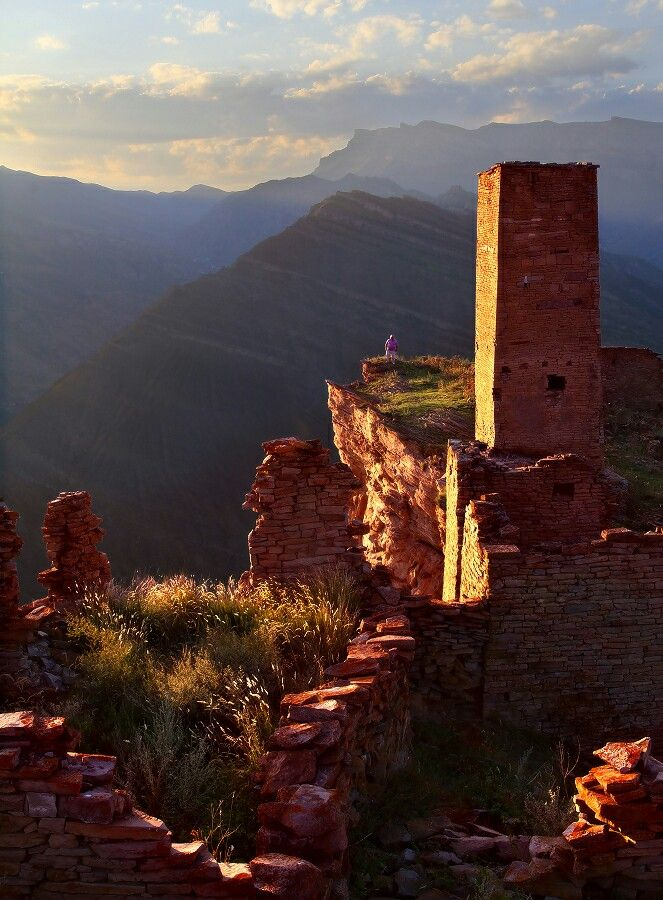

экскурсия
Гоор
И ЯЗЫК ТРОЛЛЯ
1 ДЕНЬ. Места, где захватывает дух: легендарный уступ над бездной, башни Гоора и мистика заброшенных аулов.
смотреть программупрограмма экскурсии
Насыщенный день по лучшим локациям
Выезд из Махачкалы
Сбор группы на пр. Акушинского, д. 19. По пути заезжаем за туристами из Каспийска и Избербаша.
Гимринский тоннель и Башня Шамиля
Проезд через самый длинный автодорожный тоннель России (4303 м). Остановка у Гимринской башни.
Ирганайское водохранилище
Смотровая над бирюзовым водоёмом — панорамное фото перед подъёмом в горы.
Датунский христианский храм
Храм X–XI века в горном ущелье — редкий памятник доисламской эпохи Дагестана.
Аул-призрак Кахиб
Заброшенное средневековое село с боевыми башнями, вросшими в скалу. Атмосфера первозданного Дагестана.
Национальный обед
Аварский хинкал, чуду и травяной чай в гостевом доме.
Башни Гоора
Оборонительный комплекс из семи средневековых башен — один из лучших в Дагестане.
«Язык Тролля»
Скальный выступ над пропастью. Панорамный вид на долину Аварского Койсу — главное фото поездки.
Выезд обратно
Обратная дорога через горы с рассказами гида о средневековой истории Дагестана.
Возвращение в Махачкалу
Заезд по точкам высадки.
об экскурсии
Высота, башни и легенды
Язык Тролля
Прогуляйтесь по легендарному уступу над бездной и ощутите масштаб горного Дагестана.
Башни Гоора
Оцените неприступное величие древних башен и прикоснитесь к атмосфере старых аулов.
От 4 500p
Стоимость указана за человека.
что входит
Всё нужное для удобной экскурсии
Транспорт по маршруту
Переезды между основными точками экскурсии в течение дня.
Организация маршрута
Продуманная логистика и комфортная последовательность остановок.
Топ-локации
Самые яркие точки экскурсии без лишней суеты.
Дневной формат
Насыщенная однодневная программа, удобная для короткой поездки.
что вас ждёт
Лучшие локации маршрута

Башни Гоора
Оборонительный комплекс из семи средневековых башен на краю отвесной пропасти — один из лучших в Дагестане.

Язык Тролля
Скальный выступ над пропастью. Панорамный вид на долину Аварского Койсу — главное фото поездки.

Датунский храм
Христианский храм X–XI века в горном ущелье — редкий памятник доисламской эпохи Дагестана.

Ирганайское водохранилище
Зеркальная гладь воды среди высоких гор. Идеальное место, чтобы насладиться тишиной и природой.
Хотите поехать на эту экскурсию?
Оставьте заявку или напишите нам в мессенджер — подскажем по датам, трансферу и свободным местам.